Inhalt Index DeskTop Bronstein

 Funktionalanalysis Metrische Räume Vollständige metrische Räume Einige Anwendungen des Kontraktionsprinzips
Funktionalanalysis Metrische Räume Vollständige metrische Räume Einige Anwendungen des Kontraktionsprinzips


Es werde die Differentialgleichung
mit einer stetigen Abbildung 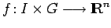 betrachtet, wobei I ein offenes Intervall aus  und G eine offene Teilmenge aus
und G eine offene Teilmenge aus  sind. Die Abbildung f genüge bezüglich x einer LIPSCHITZ-Bedingung, d.h., es gibt eine positive Konstante L mit
sind. Die Abbildung f genüge bezüglich x einer LIPSCHITZ-Bedingung, d.h., es gibt eine positive Konstante L mit
| 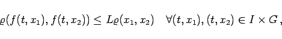 | (12.71) |
wobei  die euklidische Metrik in
die euklidische Metrik in  bezeichnet (unter Verwendung der Norm, gilt die Beziehung (12.81) 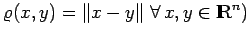. Sei 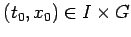 ein beliebiger Punkt. Dann gibt es solche Zahlen 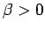 und r>0 so, daß die Menge 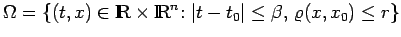 in I x G liegt. Seien 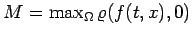 und 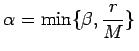. Dann existiert eine Zahl 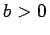, so daß für jedes 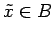 mit 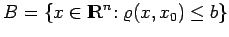 das Anfangswertproblem
bezeichnet (unter Verwendung der Norm, gilt die Beziehung (12.81) 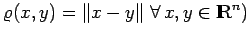. Sei 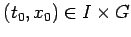 ein beliebiger Punkt. Dann gibt es solche Zahlen 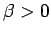 und r>0 so, daß die Menge 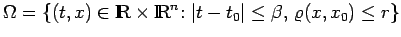 in I x G liegt. Seien 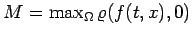 und 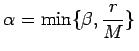. Dann existiert eine Zahl 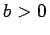, so daß für jedes 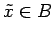 mit 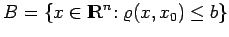 das Anfangswertproblem
genau eine (lokale) Lösung 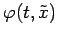 besitzt, d.h. 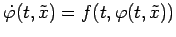 für 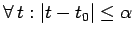 und 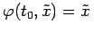. Die Lösung dieses Anfangswertproblems ist äquivalent zur Lösung der Integralgleichung
Bezeichnet jetzt  die abgeschlossene Kugel 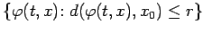 des in der Metrik
die abgeschlossene Kugel 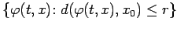 des in der Metrik
| 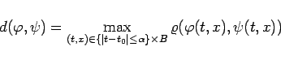 | (12.74) |
vollständigen metrischen Raumes 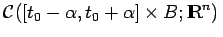, dann ist  mit der induzierten Metrik selbst ein vollständiger metrischer Raum. Ist 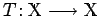 der durch
mit der induzierten Metrik selbst ein vollständiger metrischer Raum. Ist 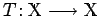 der durch
| 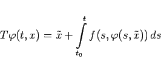 | (12.75) |
definierte Operator, dann ergibt sich die Lösung der Integralgleichung (12.73) als eindeutiger Fixpunkt des Operators  , der sogar iterativ erzeugt werden kann.
, der sogar iterativ erzeugt werden kann.